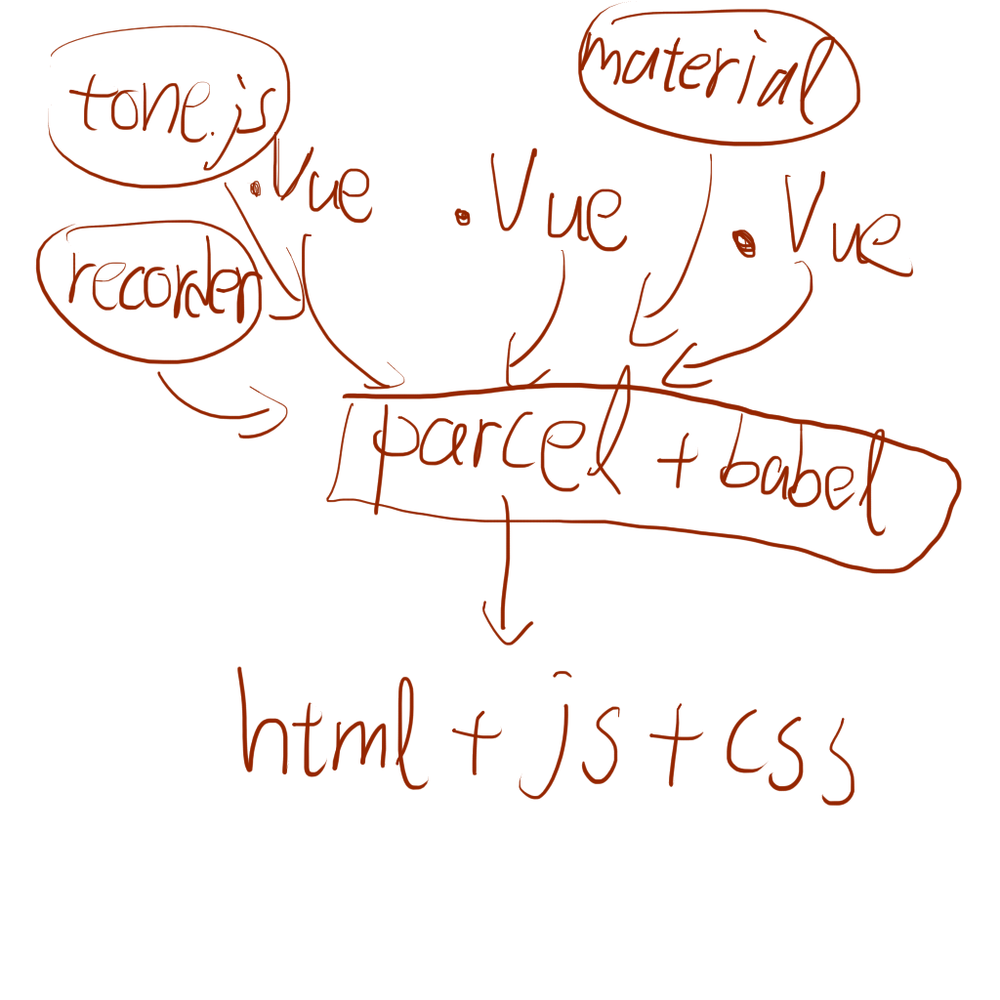

Music Editor
of
目錄
-
製作原因 -
使用技術 -
感想 -
demo -
檢討與未來
製作原因
對，就這樣
沒什麼高大上的理由
使用技術與參考文獻
Tone.js
瀏覽器中的音樂框架，本日主角
Material Design

Recorderjs
Vue.js
前端框架，用來幫助視圖控制與模組化開發
Babel

將javascript最新語法轉譯到瀏覽器可使用的狀態
parceljs
用來將分散的Lib打包在一起
用醜圖簡述

感想
這是我注意過最多細節的程式
在設計過程中也學到音樂的各種知識
雖然跟DSP關係不是說很強烈
請開始我的自爆
原本想要做成像是節點式的編輯器
想像是美好的
現實是骨感的
(而且我個人認為還蠻難用的)
總之，做完後是成就感與失落感各佔一半
成就感自然不必說
失落感是因為做了這麼久，依然只是了玩具
不說傷心事了!!
大家一起來玩玩具吧
上連結:
https://github.com/toonnyy8/Music-Editor-of-Tone.js
demo
插件的注意事項
-
filter只能加在每個區塊的開始 -
filter的影響範圍限定在自身所在的區塊 -
plugin lag會使"同區塊"後面的base插件撥放時間後延 -
block lag只能加在每個區塊的結尾 -
block lag會使"後面區塊"的base插件撥放時間後延
base中的名詞解釋
Envelope
-
Attack :
音量從0到最大值花的時間 -
Decay :
音量到最大值後，下降至Sustain所花的時間 -
Sustain :
第二音量的大小 -
Release :
從第二音量降至0所花的時間
Oscillator
Musical Notation
就只是樂譜
-
BPM :
一分鐘有幾拍
-
Length Per Duration :
音長的單位
-
Duration :
一個音的長度，本程式以Length Per Duration為單位
檢討與未來
目前缺少依照音階調整分貝的功能
這會導致低音與高音的音量差距太大
雖然可以用不同插件區隔出不同的音階
但終究不是很方便
還有聲音聽起來都蠻僵硬的
未來可能會選擇增加預設音色
像是原本就配好的鋼琴、鼓聲等等
操作介面也要改成節點式
比較直觀
Transition Styles
You can select from different transitions, like:
None -
Fade -
Slide -
Convex -
Concave -
Zoom
Themes
reveal.js comes with a few themes built in:
Black
(default) -
White
-
League
-
Sky
-
Beige
-
Simple
Serif
-
Blood
-
Night
-
Moon
-
Solarized